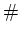
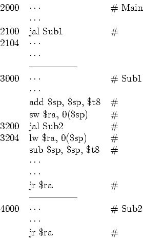

Consider the following MIPS code segment. Assume each instruction contains four
bytes and the number in front of some of the instructions represent their addresses in
the main memory.
Comment on the function of each instruction labeled with a number sign , and show
the contents of (0) $ra=$31, (1) the program counter PC, (2) the stack pointer SP, and
(3) the top item of the stack in memory during the following moments (assuming before
subroutine 1 is called [$ra]=0, [sp]=6000, M[6000]=0):
- After Main calls Sub1;
- After Sub1 calls Sub2;
- After Sub2 returns to Sub1;
- After Sub1 returns to Main;

Solution:
- After Main calls Sub1: $ra=2104, PC=3000, SP=6000, M[6000]=0
- After Sub1 calls Sub2: $ra=3204, PC=4000, SP=6004, M[6004]=2104
- After Sub2 returns to Sub1: $ra=2104, PC=3204, SP=6000, M[6000]=0
- After Sub1 returns to Main: $ra=2104, PC=2104, SP=6000, M[6000]=0